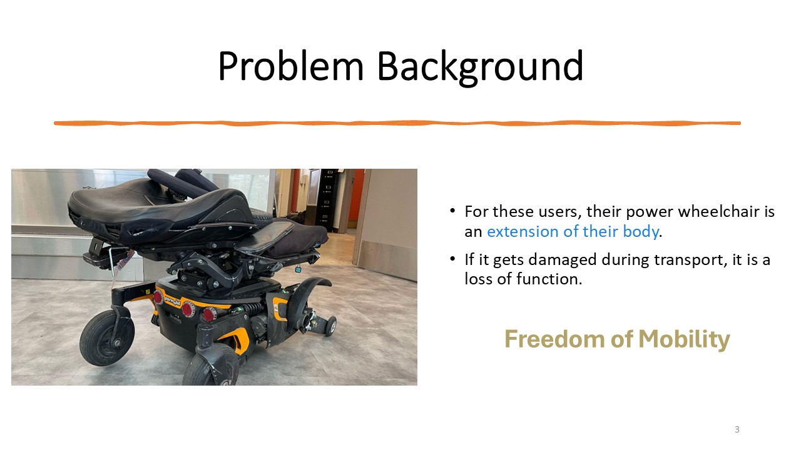
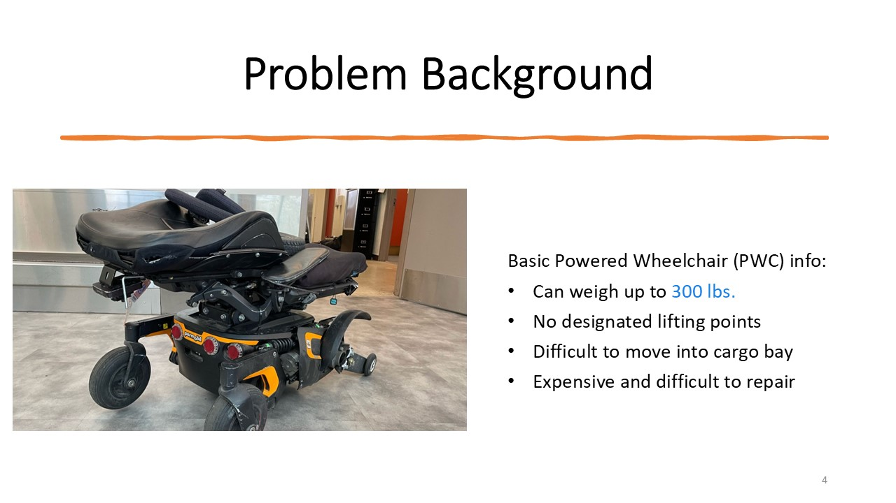
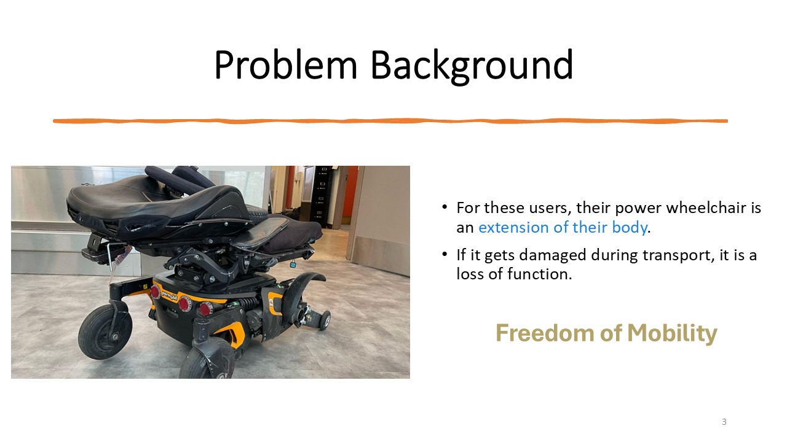
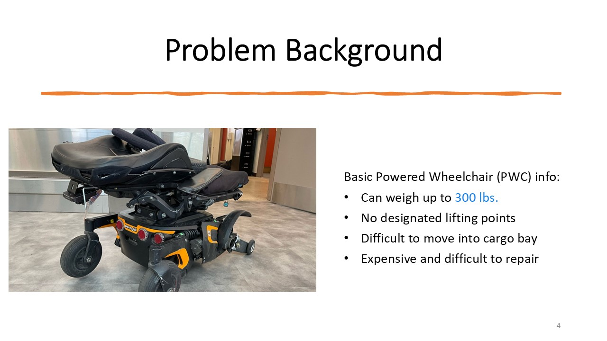

Myself and 5 other teammates created a Powered Wheelchair Pod, intended to reduce the number of PWC's damaged during airline transit.
Damage to a PWC is incredibly significant to a PWC user causing physical and mental strain to the user. Airlines are significantly incentivised to protect PWC's during flight for moral and financial reasons.
Here is our project poster which I also made! I am very proud of it as it communicated our project at the convention clearly.
The project was largely requirements based. I personally worked diligently to define a SCOPE to the project. I attended many calls with Powered Wheelchair users and Delta airlines employees to define EXACTLY the need for both stake holders. I believe the requirements writing was the significant portion of the project, and the actual engineering (design, simulate, build) was simple.
Here is a screenshot of an email I wrote before a call with the General Manager of Airport Strategy at Delta Airlines!
Additionally here is our final presentation. This shown is a fraction of the total work done in the whole semester as we also wrote many many essays and presentations to culminate to this. Thankfully the work was worth it as we won first prize in the capstone competition!

 




 Return to main
Return to main